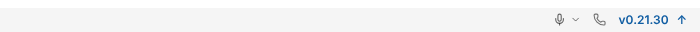
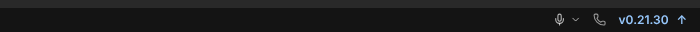
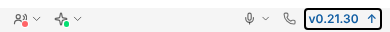
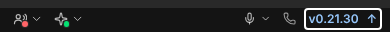
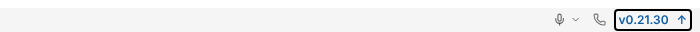
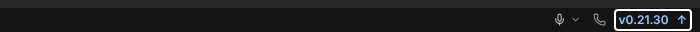
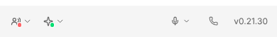
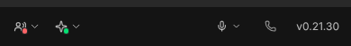

Patrick 05.11.2026: Die Versionsnummer steht in der Fußleiste immer ganz rechts, hinter Mikrofon und Telefon. Klick sucht nach Updates; ein Angebot wird wie bisher hervorgehoben (↑). Zugänglicher Name beginnt mit dem sichtbaren Text („v0.21.30, Nach Updates suchen“). Schmal (390 px) bleibt die Leiste einzeilig.


1. Update-Angebot: Version in Akzentschrift mit ↑, Tooltip und zugänglicher Name „v0.21.30, Version 0.23.0 ist verfügbar – klicken zum Installieren“ (Test).
2. Klickbar: gleicher Statusknopf wie Mikrofon/Telefon (Hover-Fläche, Fokusrahmen 2 px); Tooltip „Nach Updates suchen“; Name „v0.21.30, Nach Updates suchen“ per toHaveAccessibleName belegt.
3. Touch (pointer: coarse) 390 px: Trefferfläche 57,8 × 44,0 px hell und dunkel (boundingBox, touchziele-390.txt).







